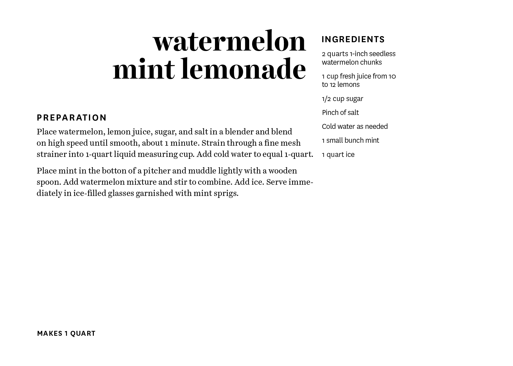
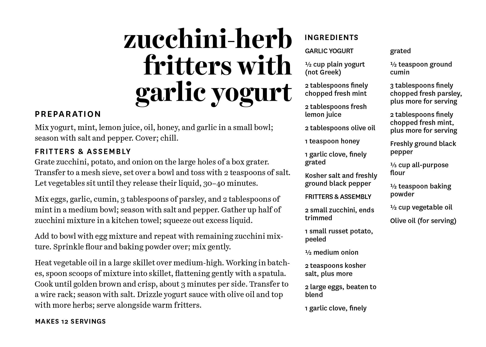
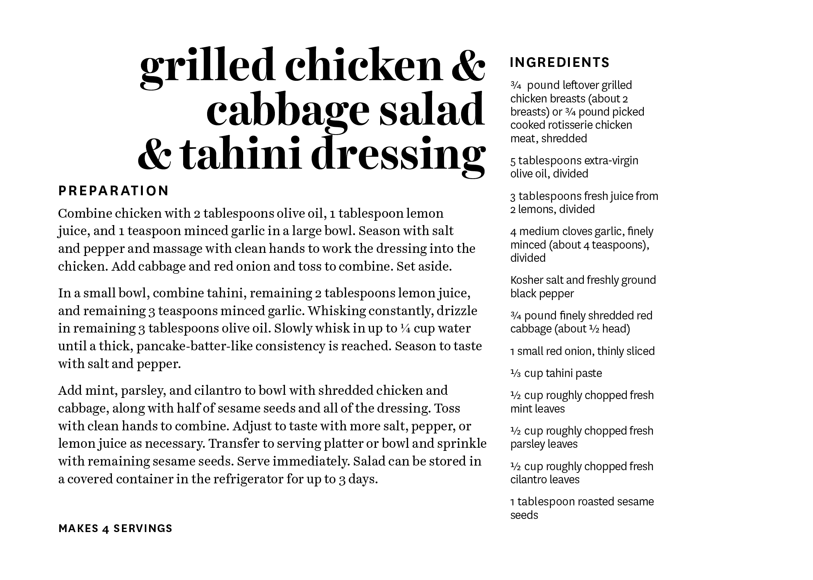

Created for CDGD-230 Typography II, Massachusetts College of Art & Design
A series of herbal recipe cards and packaging. The challenge was to create a typographic system that works for varying amounts of information.